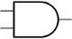
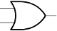
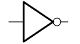
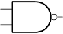
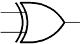
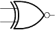

| Icon | Name | Workings |
|  | And | Output true if all inputs true |
|  | Or | Output true if at least one input true |
|  | Not | Output inverse of input |
|  | Nand | Output false if both inputs true, true in other cases |
| Nor | Output true if both inputs false, false in other cases | |
|  | Xor | Output true if exactly one input is true, false in other cases |
|  | Xnor | Output true if both inputs are true, or both inputs are false |